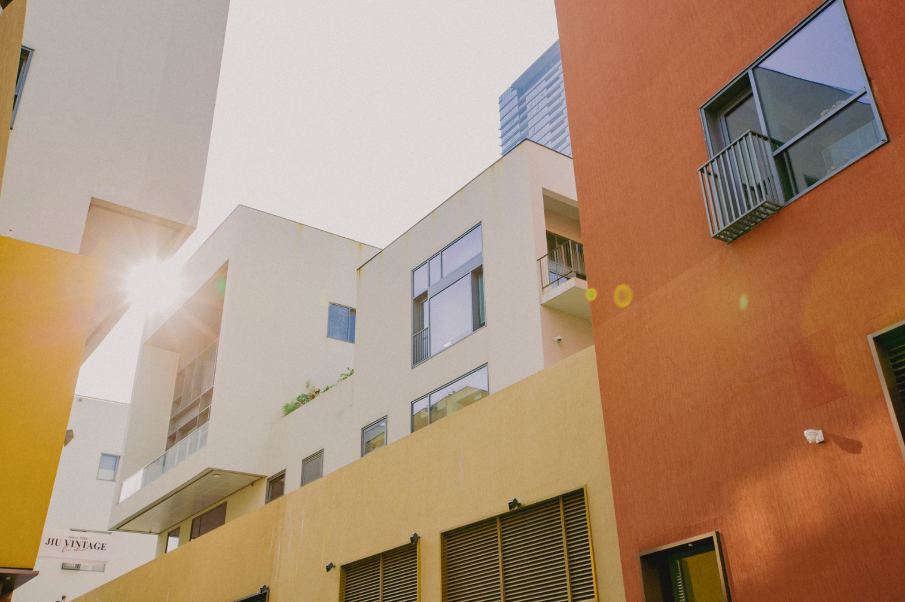
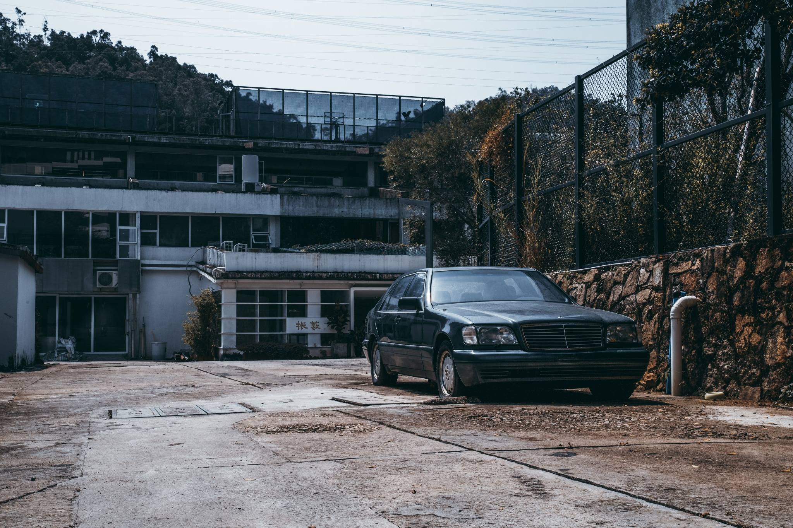
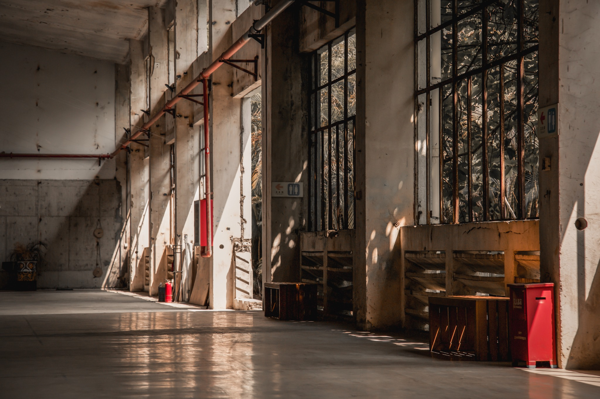
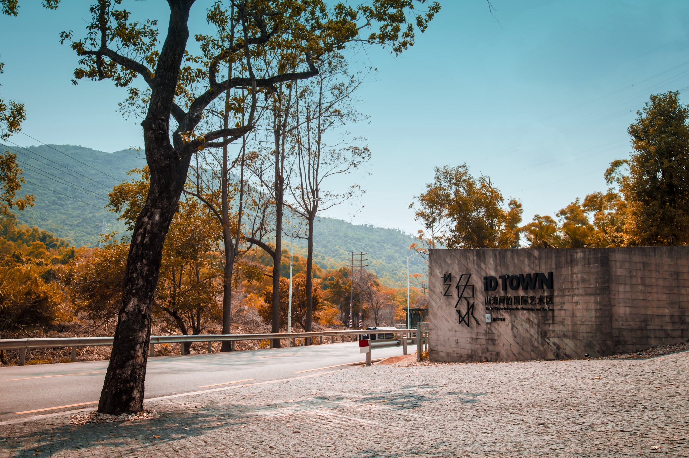

Photography
Personal Works and Visual Fragments
These photographs are arranged with more air and less explanation. They hold light, geometry, small moments, and the emotional residue that remains after the image is made.



“A photograph does not need to explain everything to remain present.”




